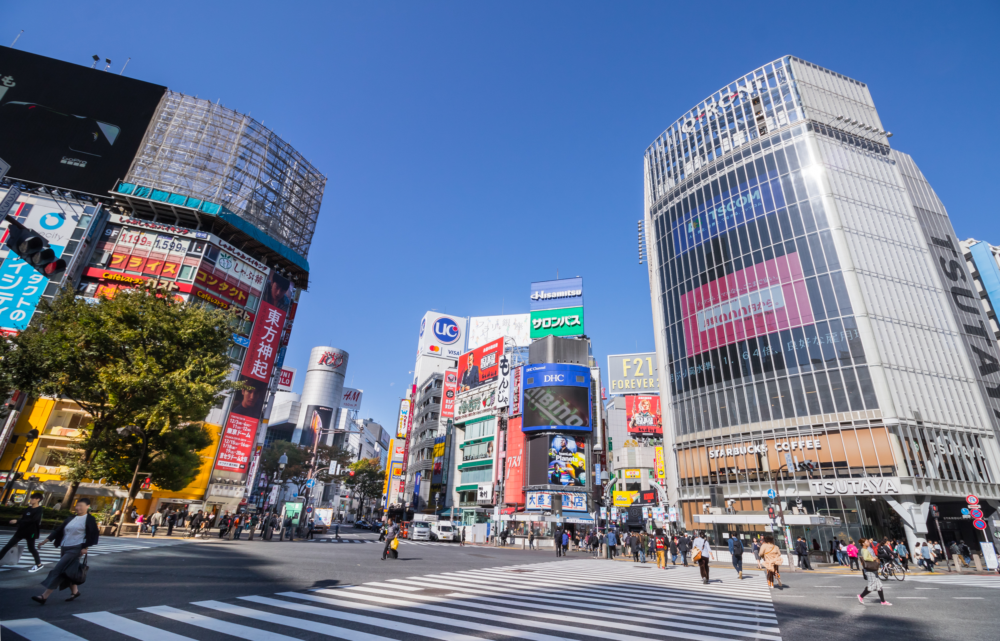

What makes Tokyo so great?
You won't need any convincing to visit the bright, buzzing metropolis that is Tokyo, the epicentre of Japanese food, fashion and late-night fun. With its two international airports, Tokyo is usually the first and last stop on every traveller’s trip to Japan, but the city deserves much more than a quick, jet-lagged pitstop. It’s a distillation of the best and worst the country has to offer – clean, safe and convenient, but also crowded, expensive and conformist (just squeeze onto a rush-hour train if you don’t believe us). It’s also endlessly varied, with wooden buildings sitting next to modern towers forged out of glass and steel, and haute cuisine restaurants alongside shacks that have been serving the same three noodle dishes for generations. Whether you’re interested in food, art, sports, architecture, nightlife or fashion, you’re sure to find Tokyo fascinating. Tokyo has the largest population of any city in the world. It certainly seems that way when you’re there, and the sheer number of people can be a little overwhelming in Shinjuku or Shibuya.The best places to catch your breath and admire the splendour of this huge metropolis are above you. You could head to the observation deck of the iconic Tokyo Tower or aim even higher and visit Tokyo Skytree’s Tembo Deck or Tembo Galleria. The most luxurious spot, though, must surely be the Park Hyatt’s 52nd-floor New York Bar. There’s nowhere better to sip a drink, listen to jazz and watch the city lights stretching away to the horizon.
Dining and Lodging
Tokyo is very large and vast and many people would begin to get overwhelmed when thinking of a place to stay during their visit but Tokyo's metro system makes it very easy and fast to get around to just about anywhere in a short span of time. Due to Tokyo's futuristic and efficient metro system, it really does not matter where you want to stay because everywhere you want to do is so easily accessible. With that being said, do a search for the best areas to stay in Tokyo and the majority of people will point you to Shinjuku. I would agree. Shinjuku is a lively area with lots of shops and restaurants, making it one of the most convenient areas to stay in Tokyo.  As described, Shinjuku is the best place to stay in Tolkyo. It’s a major transportation hub with thousands of restaurants, bars, and shops. It’s great during the day but it gets even better at night when all its neon signs are lit up. You can search for accommodations in Shinjuku on Booking.com or Agoda.com. If you can find one that suits you, then I suggest booking a hotel close to Shinjuku Station. You could honestly stay in Shinjuku the entire time in Tokyo and never leave. There is so much to see and do there.Shibuya is another great shopping area in Tokyo that’s similar in feel to Shinjuku, though perhaps with a younger crowd. It’s also a major transportation hub with plenty of shops, restaurants, and cafes. There’s lots to see and do in Shibuya though it doesn’t quite have the same vibe and energy as Shinjuku, especially at night. You can find more informaton at The Official Tokyo Travel Guide. Also, shown below are some of our recommendations for places you may want to stay during your trip.